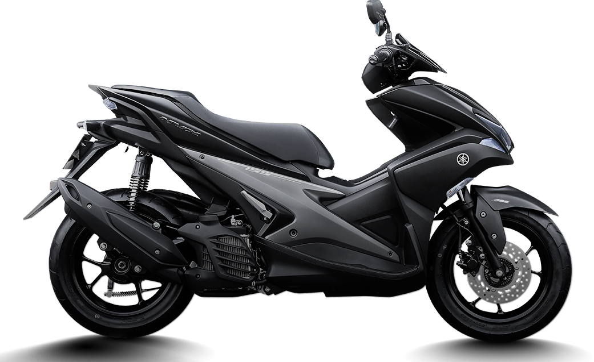
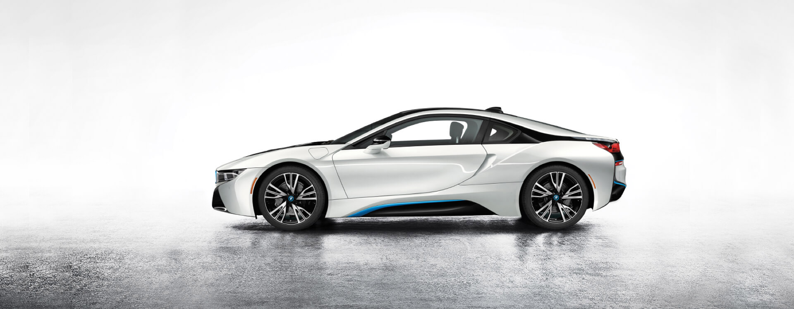
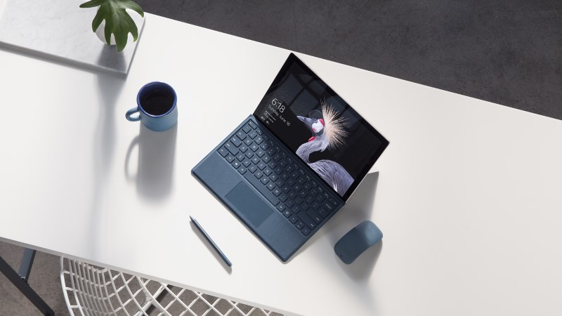
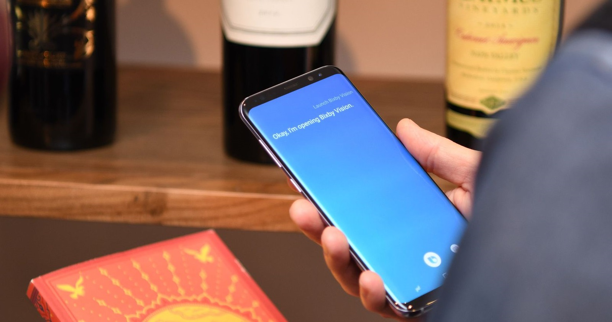
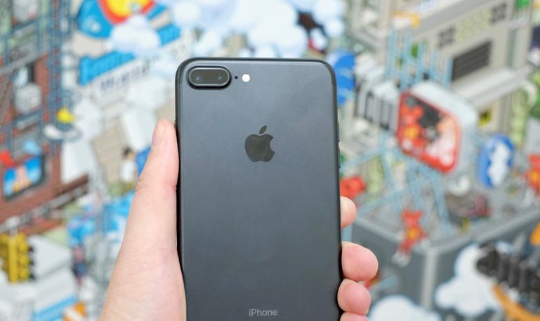

WSJ: Microsoft tái cơ cấu nhân lực bán hàng trên toàn cầu, có thể cắt giảm hàng ngàn nhân viên
Tiếp nối chuỗi hoạt động nhằm thay đổi cấu trúc công ty sau khi Satya Nadella lên giữ chức CEO hồi 2014, Microsoft mới đây đã tái cơ cấu nhân lực bán hàng toàn cầu theo hướng tập trung vào mảng bán các dịch vụ đám mây thay vì từng phần mềm riêng lẻ như trước giờ. Nguồn tin từ WSJ cho biết hãng sẽ cắt giảm hàng ngàn nhân viên trong lần chuyển…
Anh em khắp miền rủ nhau khoe xế NVX ấn tượng
Ra mắt lần đầu vào tháng 12/2016, với bộ máy Blue Core 155cc và thiết kế ấn tượng , đặc biệt khác lạ so với các dòng xe đang có trên thị trường NVX nhanh chóng tạo được làn sóng yêu thích từ anh em yêu xe khắp nơi. Các CLB chơi xe NVX lần lượt được ra đời và ngày càng phát triển lớn mạnh, những cái tên như Club như NVX Hà Nội, CLB NVX Miền Nam…
BMW tiết lộ về chiếc i8 mui trần chạy điện hoàn toàn
Chúng ta đã từng nghe nhiều về phiên bản mui trần của chiếc xe lai BMW i8 nhưng lần này đích thân BMW đã xác nhận về một mẫu xe như vậy, và chạy điện hoàn toàn. Trong đoạn video ngắn mà hãng xe Đức công bố, họ đang thử nghiệm khí động học cho mẫu xe tương tự như i8 hiện tại. Chiếc xe thứ 3 trong dòng i-Series này sẽ dùng chung khung gầm và vật…
Surface Pro đã xong nhiệm vụ, giờ đến lượt Surface Laptop
Tờ Digitimes cho biết Microsoft đang tiếp tục giảm lượng đơn hàng sản xuất Surface với đối tác ODM Pegatron. Lý do của việc này là do Microsoft nhận thấy nhu cầu của người dùng với dòng máy này không còn cao bởi các hãng khác cũng đang ra mắt những thiết bị tương tự. Đây là tin không vui với Microsoft vì công ty phải thu hẹp quy mô kinh doanh…
Trợ lý ảo Bixby trên Galaxy S8 không kịp ra mắt bản tiếng Anh vì không đủ dữ liệu
Samsung hứa hẹn sẽ ra mắt tính năng điều khiển giọng nói Bixby cho Galaxy S8 và S8+ tại Mỹ trong mùa xuân nhưng đã không kịp thời hạn này. Giải thích nguyên nhân, người phát ngôn của Samsung cho hay không có đủ dữ liệu để huấn luyện cho hệ thống trí tuệ nhân tạo mà Bixby sử dụng nên nó không thể hiểu những gì khách hàng nói. "Phát triển…
Câu chuyện jailbreak iPhone: từ một thời máu lửa đầy hứng thú cho đến lúc chết đi
Câu chuyện bên dưới được kể lại bởi chính những người đã tham gia vào quá trình jailbreak iPhone từ ngày chiếc điện thoại này bắt đầu xuất hiện trên thị trường. Đó là câu chuyện đầy thú vị về việc mày mò phần cứng để bẻ khóa sao cho iPhone chạy được các mạng khác AT&T, về cách mà người ta đã làm jailbreak trở thành một trò cực kì đơn giản chỉ bằng cách truy cập vào web JailbreakMe, hay chuyện một thành viên chủ chốt của nhóm jailbreak iPhone lại là một kĩ sư cao cấp làm trong Apple. Chuyện hơi dài, nhưng anh em nào đã từng một thời máu lửa thức đêm để jailbreak, những ai đã từng mày mò để làm cho chiếc iPhone chạy được ở Việt Nam nên đọc qua để nhớ lại một quãng thời gian vui vẻ, đầy hứng thú và vỡ òa khi một bản JB mới được phát hành.